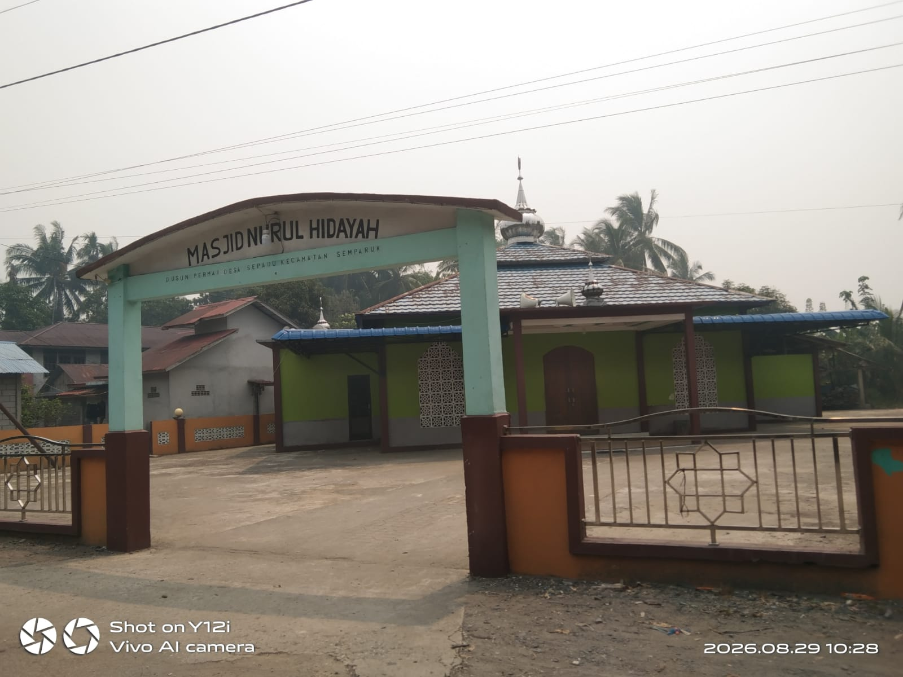
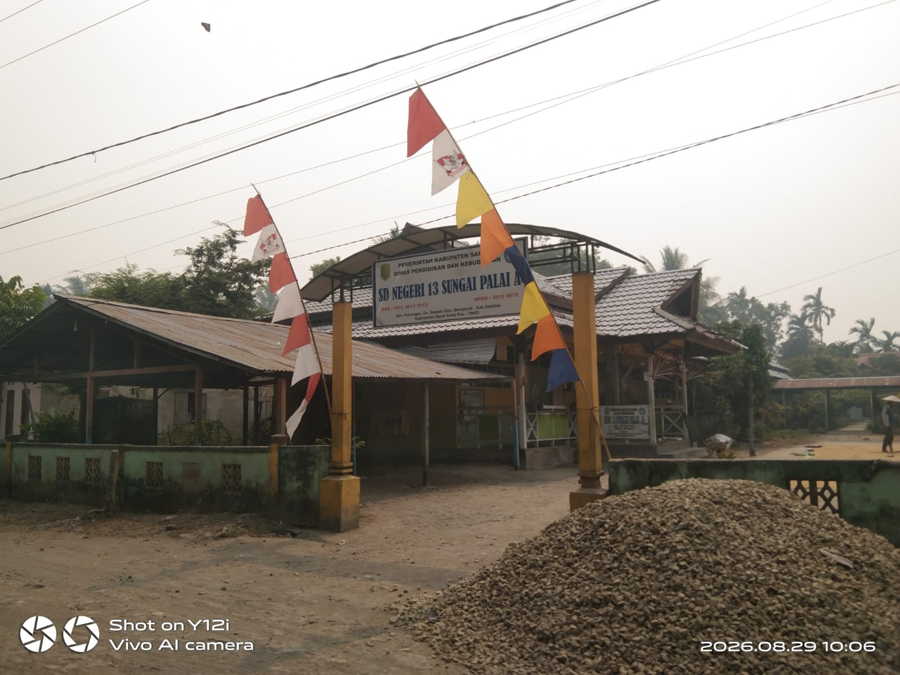

Foto Kampung
Beberapa dokumentasi Kampung Seburing

Jalan Kampung Seburing

Masjid Kampung

Fasilitas Pendidikan

Kegiatan Masyarakat
Dokumentasi Kampung Seburing
Beberapa dokumentasi Kampung Seburing
Jalan Kampung Seburing

Masjid Kampung

Fasilitas Pendidikan
Kegiatan Masyarakat